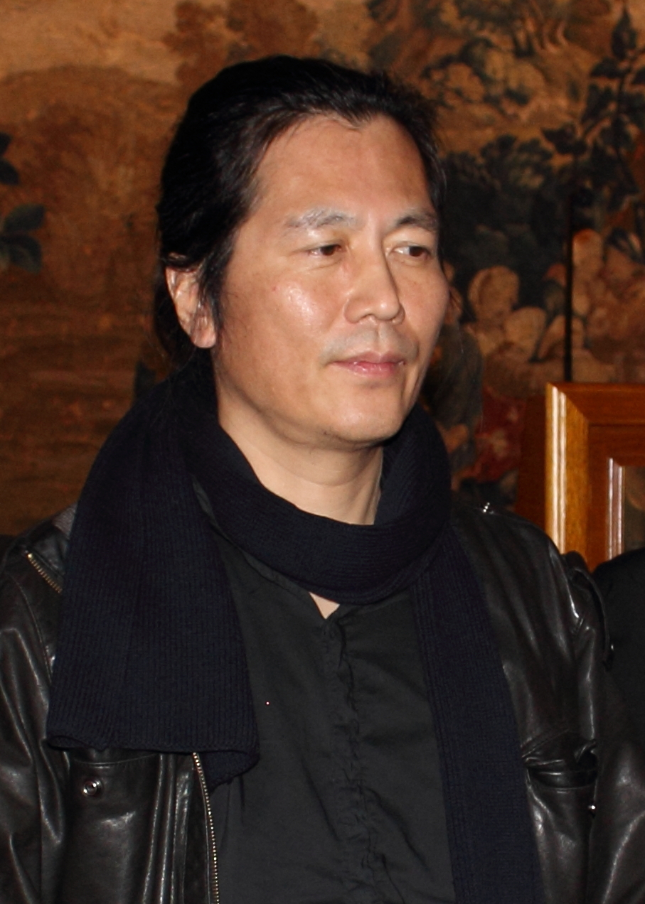

Tema 22 · Retos del siglo XXI
Para entrar en Retos del siglo XXI
Hemos llegado al presente. Las páginas anteriores nos han traído desde los primeros filósofos griegos hasta los grandes nombres del siglo XX, y el último tema dejó una pregunta abierta: la de quién queda fuera de la categoría de Sujeto pleno —quién es tratado como el Otro—, que Beauvoir formuló para las mujeres y que el siglo XXI ha vuelto a plantear en mil frentes nuevos (§77). Este tema final se asoma a esos frentes. Ya no estudiamos a clásicos consagrados, sino a pensadores vivos o de muy reciente fallecimiento, sobre cuya obra el tiempo aún no ha dictado sentencia: no hay todavía un «canon» del siglo XXI. Por eso lo recorreremos a brochazos, presentando a cada autor por su idea más característica, sin la pretensión de agotarlos.
Lo haremos en dos pasos. El primero describe el suelo que todos pisamos: un mundo globalizado, regido por un capitalismo de nuevo cuño y transformado de raíz por la tecnología digital. Cuatro diagnósticos —los de Klein, Bauman, Chomsky y Han— nos ayudarán a entender qué tipo de sociedad habitamos (§78). El segundo paso atiende a los dos grandes frentes en que el pensamiento crítico actual libra hoy su batalla: la defensa de la naturaleza frente a la crisis ecológica y la continuación de la cuestión de género abierta por el feminismo. Allí se encontrarán Nussbaum, Herrero, Preciado y, de nuevo, Butler (§79).
Una advertencia para no perderse: este tema no busca que memorices ocho doctrinas, sino que salgas del curso con un puñado de herramientas para pensar tu propio tiempo. Cada una de estas ideas es una linterna que puedes encender sobre lo que te rodea —tu móvil, tu trabajo futuro, las noticias, el planeta—. Esa es, al cabo, la pregunta con que se cierra una historia de la filosofía: ¿de qué nos sirve todo esto para entender el mundo en que nos ha tocado vivir?
§78 · Globalización, capitalismo y mundo virtual: Bauman, Chomsky, Han, Klein
El suelo común: un mundo globalizado. Llamamos globalización al proceso por el que las economías, las culturas y las comunicaciones de todo el planeta se han entrelazado hasta formar un único sistema interconectado. Una zapatilla se diseña en un país, se fabrica en otro y se vende en un tercero; una noticia o una moda dan la vuelta al mundo en segundos. Este proceso, acelerado desde el final de la Guerra Fría y por internet, ha traído riqueza y conexión, pero también nuevas formas de desigualdad, precariedad y control. Los cuatro pensadores de este epígrafe son, cada uno a su manera, diagnosticadores del presente: no construyen grandes sistemas como los filósofos clásicos, sino que ponen nombre a un malestar difuso de nuestra época. Continúan, en este sentido, la tarea de los maestros de la sospecha (§55) y de la Escuela de Fráncfort (§68): destapar lo que el sistema prefiere mantener oculto.
Zygmunt Bauman y la modernidad líquida. El sociólogo y filósofo polaco-británico Zygmunt Bauman (1925-2017) acuñó la imagen que mejor resume la experiencia vital de nuestro tiempo: la modernidad líquida. Su idea parte de un contraste. La modernidad «sólida» de los siglos XIX y XX era estable y duradera: se nacía en un lugar, se aprendía un oficio para toda la vida, se formaba una familia que permanecía, se militaba en ideas firmes. Esas estructuras sólidas —el empleo fijo, las instituciones, los vínculos duraderos— se han derretido. En la modernidad líquida, en cambio, todo fluye y nada se asienta: el trabajo es temporal y cambiante, las relaciones se vuelven frágiles y revocables —Bauman habló de amor líquido—, las identidades se montan y desmontan como quien cambia de ropa. Esta liquidez trae una libertad inédita, pero también una inseguridad permanente: vivimos sin suelo firme bajo los pies, obligados a reinventarnos sin descanso y sin la red de seguridad que daban los antiguos vínculos sólidos. Bauman vio en el consumo el motor de esta condición: la sociedad ya no nos forma como productores disciplinados, sino como consumidores a los que se mantiene perpetuamente insatisfechos para que sigan deseando y comprando.
Noam Chomsky y la fabricación del consenso. El estadounidense Noam Chomsky (n. 1928) —uno de los lingüistas más importantes del siglo, además de pensador político1— ha dedicado medio siglo a analizar el poder en las democracias liberales. Su aportación más citada, formulada junto a Edward Herman en Los guardianes de la libertad (1988), es la teoría de la fabricación del consenso. La pregunta de la que parte es incómoda: en una dictadura, el poder se sostiene por la fuerza; pero ¿cómo se controla a la población en una democracia, donde formalmente todos somos libres y votamos? La respuesta de Chomsky es que el control se ejerce sobre las mentes, no sobre los cuerpos: los grandes medios de comunicación —dependientes de la publicidad y de intereses económicos— filtran la información de modo que la opinión pública acabe consintiendo por su cuenta lo que conviene a las élites. No hace falta prohibir lo que se piensa si se logra fijar de antemano aquello sobre lo que se puede pensar. Con ello Chomsky retoma y actualiza la crítica de la industria cultural que había hecho la Escuela de Fráncfort (§68) y la vieja noción marxista de ideología (§55): el discurso que presenta como natural y evidente lo que en realidad sirve a unos pocos.

Byung-Chul Han y la sociedad del cansancio. El filósofo coreano-alemán Byung-Chul Han (n. 1959) es quizá el pensador más leído del momento sobre la vida en la era digital. Su diagnóstico, condensado en La sociedad del cansancio (2010), describe un cambio profundo en la forma en que el poder nos gobierna. Durante siglos vivimos en una sociedad disciplinaria —la que había analizado la filosofía reciente (§75)—, organizada en torno a la prohibición: muros, normas y vigilantes que nos decían «no debes». Esa sociedad, dice Han, ha dejado paso a una sociedad del rendimiento, organizada en torno a un imperativo opuesto y aparentemente liberador: «tú puedes, sé tu mejor versión, no hay límites». El resultado es paradójico y cruel: ya no es un amo externo quien nos explota, sino nosotros mismos, convencidos de que nos realizamos. El sujeto del rendimiento es a la vez amo y esclavo, se exige sin tregua y, cuando no llega, no culpa al sistema sino a sí mismo: de ahí la epidemia contemporánea de depresión, ansiedad y agotamiento (burnout). En un segundo diagnóstico, La sociedad de la transparencia (2012), Han añade otra vuelta de tuerca sobre el mundo virtual: en las redes nos exhibimos voluntariamente, ofreciendo nuestros datos y nuestra intimidad sin que nadie nos obligue. El antiguo panóptico que vigilaba desde fuera ha sido sustituido por uno digital en el que somos a la vez prisioneros y guardianes, presos felices que se enseñan al mundo. La libertad que creemos ejercer al publicar es, sugiere Han, una nueva y más sutil forma de control.
Naomi Klein y el capitalismo del desastre. La canadiense Naomi Klein (n. 1970), periodista y activista más que filósofa académica, se ha convertido en una de las voces críticas más influyentes de la globalización. Su tesis más conocida, expuesta en La doctrina del shock (2007), es la del capitalismo del desastre: la observación de que las reformas económicas más duras —privatizaciones, recortes, desregulación— suelen imponerse aprovechando momentos de conmoción colectiva, cuando una catástrofe natural, una guerra o una crisis financiera dejan a la población aturdida y sin capacidad de reacción. En el desconcierto que sigue al golpe, se aprueba deprisa lo que en tiempos normales la gente rechazaría. Klein actualiza así, para el siglo XXI, la vieja crítica al capitalismo (§58): ya no se trata solo de la explotación del trabajo en la fábrica, sino de cómo el sistema convierte el sufrimiento y el miedo en oportunidad de negocio. Su otra obra célebre, No logo (2000), había mostrado antes la otra cara del fenómeno: cómo las grandes marcas globales venden no productos, sino identidades y estilos de vida, mientras deslocalizan la producción a países donde la mano de obra es barata y los derechos, escasos.
§79 · Ecologismo y cuestión de género: Nussbaum, Butler, Herrero, Preciado
Dos frentes abiertos. Si el epígrafe anterior describía el suelo que pisamos, este atiende a dos grandes batallas que el pensamiento crítico libra hoy sobre ese suelo. La primera es la ecológica: la toma de conciencia de que el modo de vida que el capitalismo global ha extendido por el planeta choca contra los límites físicos de una Tierra finita. La segunda prolonga la cuestión de género que abrió el feminismo (§76-§77): la pregunta por quién cuenta como un sujeto pleno y por cómo la sociedad —y hoy también la técnica— fabrica los cuerpos y las identidades. Las cuatro pensadoras de este epígrafe muestran que ambos frentes están, en el fondo, entrelazados.
Martha Nussbaum y el enfoque de las capacidades. La filósofa estadounidense Martha Nussbaum (n. 1947) ha recuperado para el presente una vieja intuición: la de que una vida buena es una vida que florece, la eudaimonía que ya buscaba Aristóteles (§18). Su aportación más influyente, desarrollada junto al economista Amartya Sen, es el enfoque de las capacidades. La pregunta de la que parte es práctica: ¿cómo medir si una sociedad es justa o si un país «se desarrolla»? No basta, responde Nussbaum, con mirar la riqueza o la renta, porque un mismo recurso vale de modo muy distinto para personas distintas. Lo que de verdad importa no es lo que la gente tiene, sino lo que realmente puede hacer y llegar a ser: sus capacidades. Nussbaum llega a enumerar una lista de capacidades básicas que toda persona debería poder ejercer para vivir con dignidad —entre otras: gozar de salud y de integridad corporal, usar los sentidos y la imaginación, pensar, sentir emociones, jugar, participar en la vida política y convivir con las demás especies y con la naturaleza—. Con ello actualiza la pregunta por la justicia que se planteó Rawls (§71), pero corrigiéndola: lo decisivo no es repartir bienes, sino garantizar que cada cual pueda desplegar una vida plenamente humana. No por azar la última de sus capacidades nombra ya la relación con la naturaleza: la justicia hacia las personas y la justicia hacia el planeta empiezan a pensarse juntas.
Judith Butler, otra vez: la vida precaria. Ya conocemos a Judith Butler (n. 1956) como la gran teórica de la tercera ola, la que mostró que el género es performativo —un papel que se representa, no una esencia que se posee— y abrió el camino del pensamiento queer (§76). Conviene volver a ella un momento, porque su obra del siglo XXI ha tomado un giro que la enlaza con los demás autores de este tema. En libros como Vida precaria (2004), Butler desplaza el foco de la identidad a la vulnerabilidad: lo que de verdad compartimos todos los seres humanos no es una esencia, sino la precariedad —el hecho de ser cuerpos expuestos, dependientes de otros, que pueden ser heridos y que mueren—. A partir de ahí se pregunta por qué unas vidas se lloran como pérdidas y otras ni siquiera se reconocen como vidas dignas de duelo (las víctimas anónimas de guerras lejanas, los migrantes ahogados). Esa vulnerabilidad común, lejos de ser una debilidad que superar, es para Butler el cimiento de una ética: si todos somos frágiles e interdependientes, todos nos debemos cuidado y protección. Con este giro, la pensadora del género se asoma al mismo terreno que pisan el ecologismo y el feminismo de los cuidados.
Yayo Herrero y el ecofeminismo. La española Yayo Herrero (n. 1965) —antropóloga, ingeniera y activista— es una de las voces de referencia del ecofeminismo, la corriente que enlaza las dos batallas de este epígrafe en un solo diagnóstico. Su tesis es que la dominación de la naturaleza y la subordinación de las mujeres tienen una raíz común: un sistema patriarcal y capitalista que trata como recursos invisibles y gratuitos tanto a la naturaleza como al trabajo de cuidados que han sostenido históricamente las mujeres. Herrero lo expresa con dos palabras clave. Somos ecodependientes: cada cosa que comemos, vestimos o respiramos procede de la biosfera, de modo que una economía que crece sin límite en un planeta finito es, sencillamente, imposible. Y somos interdependientes: ningún ser humano se basta a sí mismo —todos hemos sido niños cuidados y casi todos seremos ancianos cuidados—, y ese trabajo de sostener la vida, hecho casi siempre por mujeres y sin pago ni reconocimiento, es la base oculta sobre la que se levanta toda la economía «visible». La conclusión de Herrero es que hay que poner en el centro la sostenibilidad de la vida en lugar de la acumulación de capital: reorganizar la sociedad en torno a lo que de verdad nos mantiene vivos, no en torno al crecimiento por el crecimiento. Así, la crítica al capitalismo del epígrafe anterior (§78) y la herencia del feminismo (§77) confluyen en una misma propuesta.
Paul B. Preciado y el cuerpo como territorio. Cerramos con el más radical de estos pensadores. El filósofo español Paul B. Preciado (n. 1970) lleva al límite la idea de Butler de que el género se construye, pero da un paso material que la teoría feminista no había dado: no son solo el lenguaje y las normas los que fabrican nuestros cuerpos, sino también las industrias, los fármacos y las tecnologías. En Testo yonqui (2008) —donde narra su propia experiencia tomando testosterona— acuña el concepto de régimen farmacopornográfico para describir cómo el capitalismo actual gobierna a través del cuerpo y del sexo: la píldora anticonceptiva, las hormonas, la cirugía, la industria del porno y la farmacéutica producen y regulan lo que sentimos, deseamos y somos. El cuerpo deja de ser un dato natural previo y se convierte en un territorio fabricado y disputado, una prolongación de aquella biopolítica —el poder que gestiona la vida misma— que la filosofía reciente había empezado a analizar (§75) y que aquí alcanza el plano de las moléculas. Pensador trans y figura central del transfeminismo, Preciado defiende la libertad de cada cual para rehacer su propio cuerpo y su identidad. Sus tesis son discutidas y provocadoras —él mismo busca incomodar—, pero llevan hasta sus últimas consecuencias el descubrimiento con que se abrió todo este recorrido: que muy poco de lo que tenemos por «natural» en la diferencia sexual lo es de veras.
Para cerrar
Y aquí termina el viaje. Hemos recorrido más de dos mil quinientos años de pensamiento, desde aquellos jonios que se preguntaron de qué está hecho el mundo hasta estos diagnósticos de nuestro propio presente. Si al empezar dijimos que la historia de la filosofía es una excavación en nuestras propias ideas, ahora puedes comprobar cuánto de lo que hoy das por evidente —tu noción de justicia, de libertad, de verdad, de yo, de naturaleza— viene de muy atrás y fue, en su día, una idea nueva y discutida. Ninguna de las preguntas que hemos visto está cerrada: siguen vivas, y este último tema lo demuestra. La diferencia es que, a partir de ahora, los que respondéis sois vosotros. Quien ha aprendido a rastrear de dónde vienen las ideas está mejor preparado para examinar las suyas, para distinguir lo que de verdad piensa de lo que simplemente ha heredado o le han vendido. Eso —y no una colección de nombres y fechas— es lo que esperamos que te lleves del curso: no un saber acabado, sino una caja de herramientas para seguir pensando tu tiempo por tu cuenta. La excavación, a partir de aquí, es tuya.
Su revolución en la lingüística (la idea de una gramática universal innata, común a todos los seres humanos) le dio fama mundial antes que su activismo político. Aquí nos interesa el segundo Chomsky, el crítico de los medios y del poder.↩︎